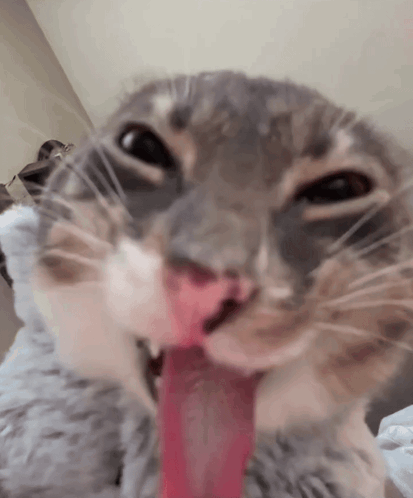

Padawan Desire
Padawan Desire is a young and passionate Jedi apprentice who is still learning to control their emotions. They are driven by a deep longing for connection and understanding, which sometimes leads them down a dangerous path. Padawan Desire's lightsaber glows with a fiery red hue, reflecting the intensity of their emotions. Despite their struggles, Padawan Desire is determined to find balance within themselves and harness the power of desire for good, hoping to one day become a powerful Jedi Knight like Master Love.
